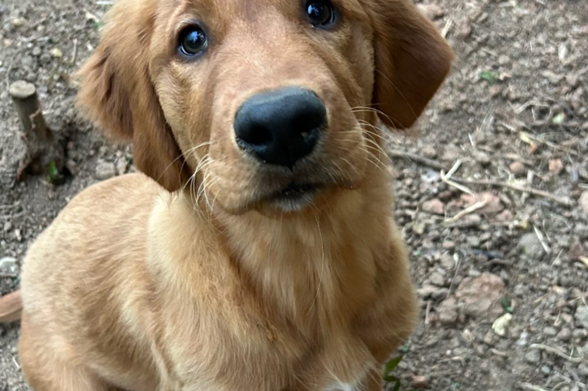
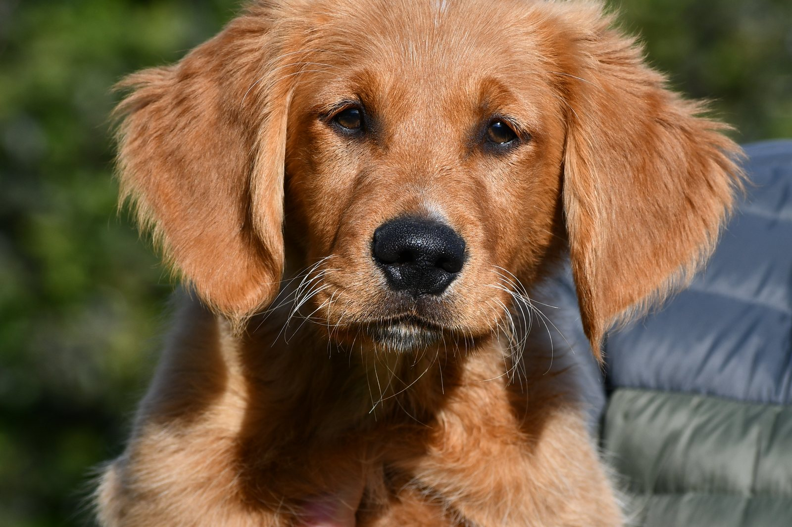
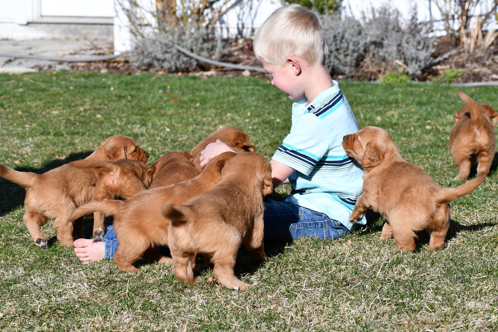
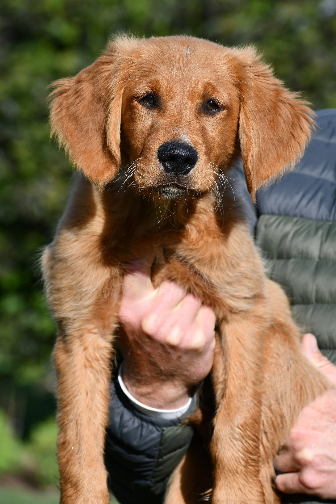

There is no one correct distance for every puppy.
I do not tell owners to start at 50 yards, 100 yards, or any other exact number.
The right starting distance is simply:
Far enough away that the shot is barely noticeable to the puppy and does not change its demeanor.
One puppy may be comfortable at a certain distance.
Another puppy may need much more space.
The puppy decides.
Why I do not use a fixed yardage
It would be easy to tell everyone:
“Start at 100 yards.”
But that would not make sense for every dog.
Puppies differ in:
- Confidence.
- Prey drive.
- Retrieving drive.
- Previous noise exposure.
- Environment.
- Sensitivity to sound.
- Age and maturity.
- How excited they are about the activity.
A distance that is easy for one puppy may be too much for another.
That is why I watch the dog instead of the yard marker.
The shot should be barely noticeable
When I first introduce gunfire to a puppy, I want the shooter far enough away that the sound is very low in importance.
The puppy may notice it.
That is okay.
But the puppy should not stop what it is doing because of the shot.
If the puppy is chasing a bird or retrieving and the shot happens, I want the dog to keep going.
The positive activity should remain more important than the gunfire.
Start with something positive before you add the shot
Before I introduce gunfire, I want the puppy already doing something it enjoys.
That may be:
- Working with birds.
- Retrieving.
- Chasing.
- Playing.
- Eating.
- Moving confidently.
For hunting puppies, birds can be especially useful.
We may spend time getting the puppy very birdy before introducing any live gunfire at all.
The gun comes after the positive experience is established.

What I want the puppy doing during the first shot
If we are working with birds, we may throw a bird while the puppy is highly excited.
Then the shooter, positioned far away, can fire a shot near the top of the bird’s arc.
The gun is pointed away from the puppy.
Then we watch.
Does the puppy keep going after the bird?
Does it keep retrieving?
Does the dog’s energy stay the same?
Does the puppy ignore the gun and stay focused on the bird?
That is what we want.

Signs the shooter is too close
If the puppy’s behavior changes, the shot may be too loud or too close.
Watch for:
- The puppy stopping its retrieve.
- Turning sharply toward the shot.
- Losing interest in the bird.
- Running back toward you.
- Becoming clingy.
- Freezing.
- Lower energy.
- Becoming unusually quiet.
- Refusing to range out.
- Watching the shooter instead of the activity.
Those are signs to back up.

Do not fire another shot just to check
If the puppy reacts badly, do not immediately fire another shot to see whether it happens again.
That is one of the ways owners turn a small concern into a bigger problem.
The first negative reaction gave you useful information.
Use it.
Move the shooter farther away.
Lower the intensity.
Return to something positive.
Then try again only when the puppy is comfortable.
How much farther away should you move?
There is no exact formula.
Move far enough away that the puppy can stay completely engaged in the positive activity again.
That may mean adding 20 yards.
It may mean adding 100 yards.
It may mean stopping live gunfire altogether for that session.
The correct distance is whatever allows the puppy to remain happy and confident.
- 1Positive activity first
- 2Shot barely noticeable
- 3Watch demeanor
- 4Closer only if the puppy stays itself
Distance matters less than demeanor
This is the main point I want owners to understand.
The number of yards is not the goal.
The dog’s behavior is.
Two puppies can stand at the same distance from a shotgun and have completely different experiences.
One may hear the shot and keep chasing a bird.
The other may shut down.
That means the distance was appropriate for one dog and not the other.
When can you move the shooter closer?
Only when the puppy is consistently comfortable.
If the puppy is:
- Happy.
- Retrieving.
- Chasing.
- Working birds.
- Moving normally.
- Maintaining strong energy.
- Not focusing on the gun.
then you may be able to bring the shooter closer over time.
But do it gradually.
There is no reason to make a big jump.
Do not progress by the calendar
I do not recommend saying:
“Today the shooter is 100 yards away, tomorrow 75 yards, then 50 yards.”
That is a human schedule.
The puppy may not be ready for it.
Some dogs can progress faster.
Some need much more time.
The puppy’s demeanor should determine every step.
What if the puppy seems completely unbothered?
That is a good sign, but I still would not rush.
A confident reaction to one distant shot does not mean the puppy needs a close shot immediately afterward.
Keep the experience easy.
Layer in more positive repetitions.
Build confidence before increasing intensity.
There is very little downside to going too slowly.
There can be a big downside to going too fast.
The gun should stay secondary to the bird or retrieve
This is one of the easiest ways to judge whether you are in the right place.
If the puppy cares more about the bird than the gun, you are probably in a good range.
If the puppy starts caring more about the gun than the bird, you are too close.
That could show up as:
- Looking toward the shooter.
- Slowing down.
- Abandoning the retrieve.
- Returning to the handler.
- Losing bird interest.
When that happens, back up.
What if you do not have enough space?
This is an important issue.
Proper live-gun introduction requires enough room to start at a safe distance and adjust gradually.
If you do not have access to:
- Large enough property.
- A safe and legal shooting area.
- Another person to handle the gun.
- Birds or retrieving equipment.
then it may make more sense to start with controlled sound work at home rather than trying to force live gunfire into a small space.
Starting at home with Gunshy Fix
One reason I created Gunshy Fix was to give owners a controlled way to begin introducing gunfire without needing a field, birds, or another person with a shotgun.
The program uses calming music and gradually introduces gunfire through the lessons.
You can play the lessons while the puppy is:
- Eating.
- Playing.
- Retrieving.
- Relaxing.
- Spending time with the family.
The same rule applies:
The puppy’s demeanor should stay normal.
How loud should Gunshy Fix be?
I recommend starting at an average, comfortable volume.
Do not turn it up loud just because the puppy seems confident.
Start with the first lesson.
Let the puppy become completely comfortable with it.
Then move to the next lesson.
If the puppy’s behavior changes, return to the previous lesson.
The progression is based on comfort, not volume or speed.
When should you move from recorded sound to live gunfire?
Once the puppy is comfortable through the sound progression and is showing good confidence around positive activities, you can begin thinking about live gunfire.
When you do:
- Start far away.
- Point the gun away from the puppy.
- Pair the shot with something positive.
- Watch the puppy’s demeanor.
- Move closer only when the dog remains comfortable.
Recorded sound is not a reason to skip the gradual live-fire progression.
What if the puppy has already had a bad gunfire experience?
If the puppy has already been exposed to a shot that was too close and showed a negative reaction, I would not simply pick a farther distance and keep shooting.
Back up more.
Give the puppy time.
Build positive experiences again.
A controlled at-home progression may be useful before returning to live gunfire.
The goal is to avoid turning one bad exposure into repeated bad exposures.
How close should the gun eventually get?
The long-term goal for a hunting dog is usually to become comfortable with gunfire happening close by during normal hunting activity.
But that is the end of the progression, not the beginning.
You earn that distance gradually.
Eventually, we want the dog to hear a close shot and keep:
- Hunting.
- Retrieving.
- Chasing.
- Working birds.
- Acting completely normal.
That is when we know the gunfire has become part of the activity instead of something the dog fears.
A simple rule for gunfire distance
If you want one rule to remember, use this:
Start far enough away that the shot is barely noticeable, and move closer only while the puppy’s demeanor stays completely positive.
Do not chase a number.
Watch the dog.
That will tell you more than any yardage recommendation can.
Start with control, not a guess
Gunshy Fix gives puppy owners a controlled way to begin introducing gunfire before moving into live field work.
The lessons gradually bring gunfire into calming music so the puppy can build comfort before being exposed to a live shot.